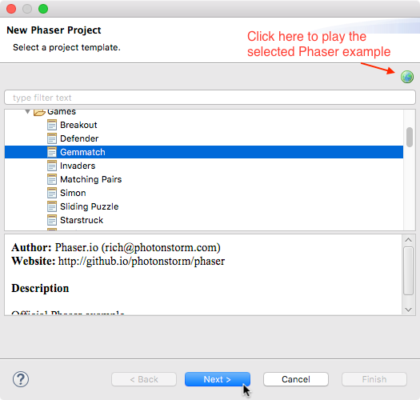

First Steps¶
This is a small guide you can follow to start writing your games and perform common tasks related to the editor’s features.
Download and install¶
Download the Phaser Editor ZIP file of your OS (win64, linux64 or macosx) and uncompress it.
Notes for Windows users¶
To execute the editor just double click on the PhaserEditor.exe file.
Notes for MacOS users¶
To execute the editor double click on the Phaser Editor application. It is a simple .app folder. By default, the projects will be created in the Phaser Editor.app/Contents/MacOS/workspace folder. We do not recommend to choose this location, just select any other forlder outside the Phaser Editor.app directory.
Notes for Linux users¶
Before to run the editor you should set execution permission to some programs bundled in Phaser Editor. To do this, run the SetExecPermissions.sh script:
$ cd "Phaser Editor"
$ chmod +x SetExecPermission.sh
$ ./SetExecPermission.sh
Then run the editor as any other Linux program:
$ ./PhaserEditor
Phaser Editor is tested on Ubuntu 17.10.
The first run¶
The first time you run Phaser Editor a Workspace Launcher dialog is open. In this dialog, you have to set the path to the folder where you want to create the workspace.
A workspace is the container folder of your projects. All your projects will be created inside the workspace, but also, in the workspace are saved your preferences and UI state. This means, that if you start Phaser Editor and select a workspace, the editor will get the preferences saved there.
A project is a folder where you add the code to your game. So you can create many projects in the same workspace.

Update¶
By default, when the editor opens it checks for available updates. We recommend you to install them, important bug fixes are provided this way.
Unlock the editor¶
Phaser Editor is a commercial product, however, by default, it runs in a Free mode that contains all the features, but only allows certain number of assets (see the table below). To use the editor without any limitations you should unlock the Premium mode, by purchasing a license key and activating the editor.
To activate the editor, click on Help → Unlock Phaser Editor, it shows an activation dialog, write the purchased license key there and click on the Activate button.
This is a table with a comparison between the Free and Premium mode:
| Assets | Free Edition | Premium Edition |
|---|---|---|
| Texture Atlas | Limited to 3 | No limits |
| Tilemap | Limited to 5 | No limits |
Scene (.canvas files) |
Limited to 15 | No limits |
| Others | No limits | No limits |
Create a project¶
In Phaser Editor there are two ways of creating a Phaser project: by using the Phaser Project wizard or the Phaser Example Project wizard.
Most users may use the Phaser Project wizard, it allows to set some parameters like the language (JavaScript/TypeScript), the layout (single/multiple state based game) and many others.
The Phaser Example Project wizard allows the user to create a project based on the official Phaser examples (and other examples, like the Phaser Editor demos). This way is great for users who start in Phaser and want to mess around with the examples.
Phaser Project wizard¶
To create the project go to File → New → Phaser Project. It opens a dialog where, at the first page, asks for the name of the project:

Write the name of your project and press the Next button if you want to change the project settings or press Finish to create the project with the default settings. We recommend you press Next and adjust some of the settings. Also, note you can select or create a Working Set for the project.
So, by pressing Next the wizard shows the settings page:

This page contains a group of parameters that affect different aspects of a project:
Game Parameters |
Are the same parameters of the Phaser.Game constructor. Set these parameters to control how the game instance is created. |
Project Structure |
Contains a list of project layouts that you can select. You can select to create a project with a very simple structure or a complex, production ready structure. These layout are related with the number of Phaser states are going to be used in the game. |
Assets |
In this section you can set if you want to add some demo assets to the project. This could be good if you want to take a better idea of how a Phaser project is. In many of the layouts, when you select to add assets, some prefabs are created so it is a good way to know how prefabs work. |
Language |
To select the language of your project (JavaScript 5, JavaScript 6 or TypeScript). At the time there is not a built-in JavaScript 6/TypeScript editor inside Phaser Editor but we included this option because developers can use any other external editor like VSCode. There are some third-party plugins for Eclipse that support TypeScript, here we talk about one of them. |
The current JavaScript editor does not support JavaScript 6, for that reason, if you select that language, a TypeScript IDE project is created. We are going to include TypeScript IDE by default in the editor in the near future.
After setting the parameters, press the Finish button to create the project and files.
Then the main file of the project will be open to starting editing the game. Usually, this main file is a scene (canvas file) so you can start adding new objects to the game.
Phaser Example Project wizard¶
In addition to the Phaser Project wizard, there is the Phaser Example Project wizard, that provides a list of templates based on Phaser examples.
- Main Editor Demos: provided by Phaser Editor. We recommend starting with them since it shows some the most important features in the editor, like the scene maker and the assets manager.
- Phaser Coding Tips: contains the issues of the [official Phaser tutorials][13].
- Phaser Templates: contains the templates listed in the Phaser GitHub repository.
- Phaser Examples: contains the official Phaser examples. These templates are a great resource to learn and test Phaser features, you can create a project, run it and modify it.
After you select the template you can press Finish to create a project with an auto-generated name, or click Next to change it. In case of the Phaser Examples templates, you can select one and play it and see the source code instantaneously, just press the “browser” button.

You can access all the Phaser Examples locally, just click the Phaser Examples button in the main toolbar, it starts a local server and opens the default browser in the Local Phaser Examples Website. In this minimalistic website, you can access to the examples, play it and see the code.
The Project Explorer¶
The Project Explorer is a view of all the projects of the workspace. It is like a file-system explorer, you can browse your projects and apply actions to the folders or files (open a file, create a folder, optimize the PNG of a folder, etc…).
A nice feature of Phaser Editor is the preview of the assets. In the Project Explorer you have two ways of preview the media files: hover the file with the mouse or select it and press CTRL+ALT+V.

By default, Phaser Editor updates (refreshes) the Project Explorer if the workspace is changed by external programs (for example if you modify, delete or add a file in the OS explorer). However, you can refresh the Project Explorer manually if you select a resource (project, folder or file) and press F5.
To organize the projects you can create Working Sets, set the Top Level Elements, set Filters and use the navigation actions like Go Into.

Run the game¶
To run your game there is a button in the main toolbar, it opens the default OS browser and starts a built-in HTTP server to listen in a random free port. First, you have to select, in the Project Explorer, the project you want to run, then press the Run Phaser Project button in the main toolbar (or press ALT+F5 ).

To run your game we said that you have to select the project of your game, but really you can select any file or folder of the project, or the file of the active editor can be used to know what project to run.
Phaser Editor has a built-in HTTP server to serve the static content of the projects. The first time you run a project, the server is started and serves all the static content of the workspace. So, in the browser is open an URL like: http://localhost:1982/projects/YourGameName/WebContent/index.html.
You can open the game in the experimental Internal Browser as well. This browser is embedded into an internal window so you can dock it in the application. When the internal browser is open in the main toolbar you have the option of changing the orientation and dimension. This browser is experimental and only works on Windows and MacOS. In case of Windows, it uses Internet Explorer, in the case of MacOS, Safari. We noticed this browser has a bad impact on the whole application performance, definitively it is not the best choice to execute your games, but it could be helpful to create video tutorials and other educational assets.

Theming¶
By default, Phaser Editor disables the Theme Engine. To set it back, open the PhaserEditor.ini file in the root folder and remove following lines, then restart the editor:
-cssTheme
none
If the themes are enabled, then open the Preferences dialog (Windows → Preferences) and select the General → Appearance section. There you can select the theme you like. By default it comes with a dark and light theme, you can install more from the Eclipse Marketplace.
Git¶
Phaser Editor supports Git by default. You can learn how to version projects in the EGit page .
Learn Phaser¶
(This section is a promotion)
If you want to learn Phaser or go deeper into it, we recommend the following Zenva Academy courses:
The Complete Mobile Game Development Course – Platinum Edition: Hands-on online course to learn iOS and Android Game Development from total scratch! Learn JavaScript, HTML5, Phaser, and Cordova!

Advanced Game Development with Phaser: Become a Black Belt Phaser developer and create advanced games. Multi-player included!